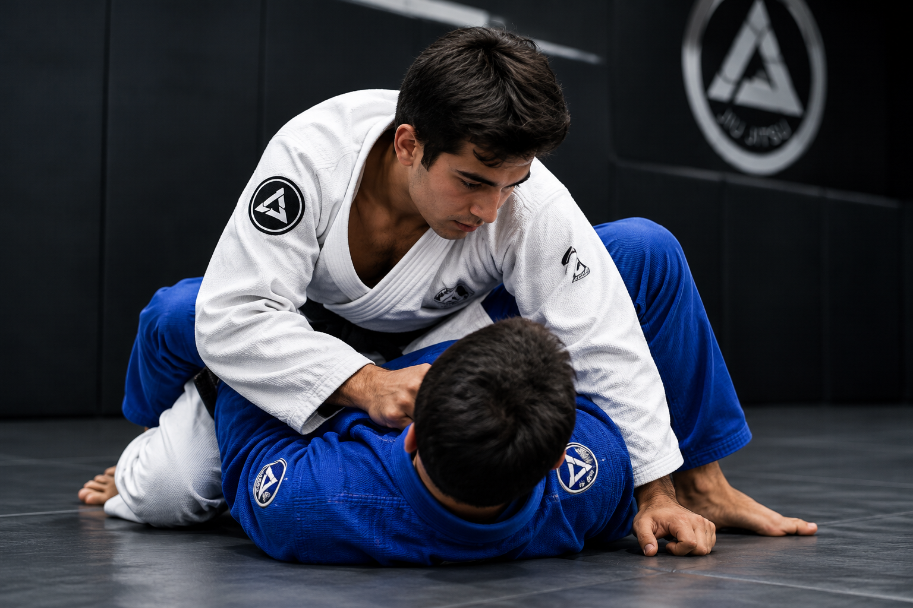

O que é o Jiu-Jitsu?
O Jiu-Jitsu brasileiro, também conhecido como BJJ, é uma modalidade de luta que utiliza técnicas de controle, imobilização e finalização. A técnica e a estratégia são fundamentais durante a prática.

Benefícios do Jiu-Jitsu
A prática regular pode contribuir para o desenvolvimento físico e pessoal.
- Melhora a força e a resistência física.
- Desenvolve a disciplina e a concentração.
- Ensina respeito aos colegas e professores.
- Ajuda a desenvolver a autoconfiança.
As faixas do Jiu-Jitsu
As faixas representam etapas da evolução do praticante. No sistema adulto, as principais cores incluem:
- Branca: faixa inicial.
- Azul: etapa de desenvolvimento técnico.
- Roxa: maior experiência na modalidade.
- Marrom: etapa avançada de aprendizado.
- Preta: alto nível de conhecimento técnico.
Saiba mais
Para conhecer mais sobre o Jiu-Jitsu brasileiro, acesse o link abaixo.
Pesquisar vídeos sobre Jiu-Jitsu